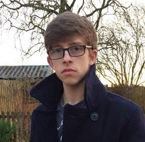

My passion for games development, like most others, comes from playing way too many video games as a child.
I first learned about the developemnt proccess by watching developer videos from 'Naughty Dog'.
I was immediately enthralled by the process of developing and design games, and since
I have never been an amazing artist I saw a chance do achieve this through programming and problem solving.
My dream in games development is to, hopefully, one day design and create my own games and create the sorts
of unique experiences only found in gaming. Outside of computers and video games I am usually furthering my martial arts training
which i have been doing for 10 years, I obtained the rank of Black Belt more than a year ago and aim to train even harder and longer.
I adore this and computers equally as much hope that I can do both for many years to come.